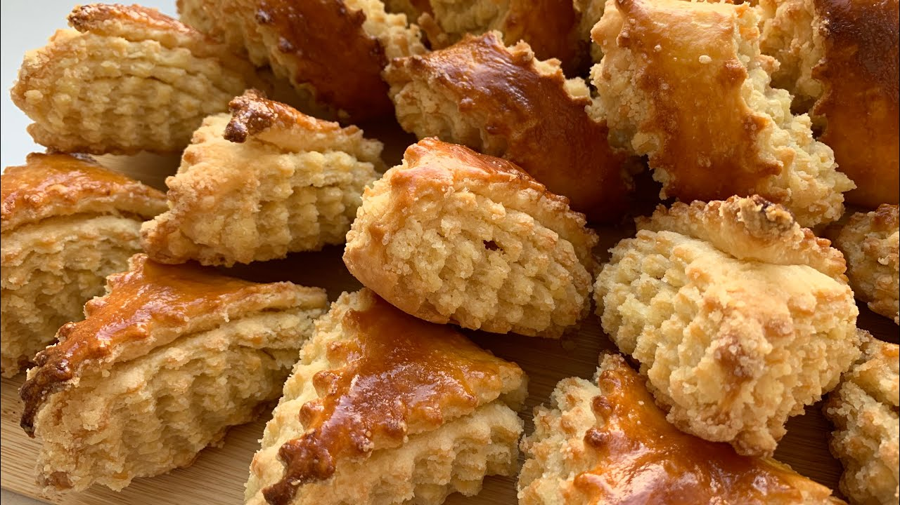

приготовление:
-
Заранее для начинки выложить 100 гр. сливочного масла на стол, чтобы оно мтало мягким.
-
Для теста в большое блюдо просеять 400 гр. муки, добавить 1 ч.л. с горкой разрыхления, слегка размешать. Взять 250 гр. сливочного масла, обвалять в мучной смеси этот целый кусок и натирать на крупной/средней терке прямо в мучную смесь, периодически помешивая, стараясь масло обвалять в муке. После руками перетереть, помешать масляно-мучную смесь, долго не мешать, чтобы не расплавилось масло. В отдельной мисочке смешать 1 яйцо, 200 гр. сметаны и 1 ч.л. ванильного экстракта. После сметанную смесь соединить с мучной. Сначала ложкой, потом, припылив мукой рабочую поверхность, и руками, но не долго, а минуты 1,5, чтобы только тесто скатать в шар. Разделить тесто на две части, обернуть обе в пленку и убрать в холодильник, пока делается начинка.
-
Для начинки в миске смешать мягкое сливочное масло, 250 г. сахара и 1 ч.л. ванильного экстракта, перемешать, жамкая руками, добавлять порциями просеянные 250 гр. муки. Должна получиться консистенция, чтобы сжав в кулаке, образовывался комочек плотный, а когда его тыкнешь - он легко рассыпался. Если нет - добавить либо муки, либо растительного масла. По желанию сюда можно добавить любимые орехи или сухофрукты.
-
Поставить духовку греться до 180-190 градусов.
-
Достать часть теста, раскатать максимально тонко в прямоугольник, подвыляя мукой периодически. Начинку визуально разделить на 2 части, одну часть выложить на тесто, распределить по тесту, кроме краев, слегка уплотнить, похлопывая тесто. Завернуть в рулет. Рулет слегка прокатать скалкой, чтобы утрамбовать. Для смазки взболтать 2 желтка + 1 ст. л. молока. Смазать рулет, нанести обратной стороны вилки узор ромбики. Разрезать фигурным шпателем или обычным ножем на треугольники или полоски по 3 см. Перенести на пергамент, оставляя расстояние между ними. Выпекать примерно 20 минут до золотистой корочки.